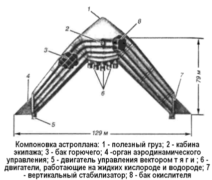

Астроплан
Специалисты НАСА изучали не только сложные многоступенчатые схемы. И в 60-е годы еще сохранялась определенная инерция конструкторского мышления, взращенного на представлении о космическом корабле как о чем-то цельном и монолитном. В частности, довольно активно обсуждалась концепция «Астроплана» — одноступенчатого крылатого космического аппарата, предназначенного для доставки грузов на орбитальную космическую станцию.
Кроме того, предполагалось, что астроплан можно будет применять для грузовых и пассажирских перевозок в пределах земного шара на дальность порядка 10 000 километров.
Астроплан должен был иметь взлетный вес 4550 тонн, посадочный вес — 330 тонн, полезная нагрузка составляла 200 тонн.
Стреловидные крылья астроплана скомпонованы из топливных баков. Чтобы сделать конструкцию наиболее эффективной по нагрузке, кислород, составляющий 74 % взлетного веса, размещали в параллельных цилиндрических баках, расположенных перпендикулярно оси симметрии аппарата. К передней кромке баков крепилась полезная нагрузка, а на задней кромке устанавливались десять ЖРД тягой по 680 тонн каждый. Жидкий водород, составляющий 15 % взлетного веса, закачивали в коническо-цилиндрические баки, образующие стреловидные крылья. Аэродинамические рули устанавливали на концах крыльев и также использовали как топливные баки.
Все нагрузки во время разгона и возвращения воспринимаются конструкцией, имеющей криогенные температуры; при возвращении в атмосферу до высокой температуры нагревается только ненагруженный тепловой экран.
Водородные баки изготавливались из титана, а кислородные — из высокопрочной стали.

Траектория вывода астроплана на орбиту близка к траектории взлета баллистических ракет-носителей.
Незаправленный космический корабль доставляется за восемь часов до пуска на стартовую площадку и устанавливася вертикально на пусковой стол. После монтажа полезного груза, заправки топливом и окончательного контроля всех систем запускаются двигатели и астроплан освобождается от стопорного устройства.
В течение 365 секунд активного полета астроплан летит по траектории с нулевой подъемной силой, достигая на высоте 93 километров скорости, несколько превышающей круговую; максимальное ускорение на активном участке не превышает 3,5 g и регулируется дросселированием двигателей.
После выключения основных двигателей астроплан выходит на орбиту ожидания высотой 150–185 километров, на которой остается до тех пор, пока угол между ним и орбитальной космической станцией не будет оптимальным для выполнения маневра встречи. Маневр встречи и швартовки выполняется с помощью двигателей управления вектором тяги; эти же двигатели используются для торможения при входе в атмосферу.
С включением в соответствующей точке орбиты тормозных двигателей астроплан теряет высоту и возвращается в атмосферу под малым углом. Полет его замедляется, и при аэродинамическом управлении он планирует до стартовой площадки в пределах заданного «коридора» аэродинамического полета. После посадки астроплана проводятся его осмотр, обслуживание и подготовка к следующему запуску. В случае катастрофы экипаж должен спасаться в приданном астроплану космическом корабле типа «Джемини», а сам астроплан — уничтожаться системой ликвидации.